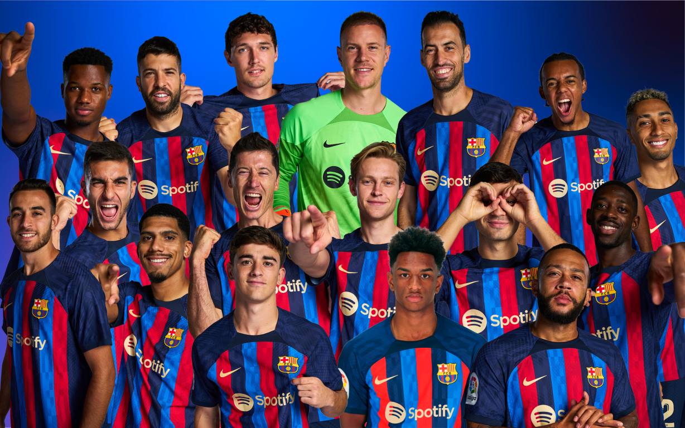

FC BARCELONA
El Fútbol Club Barcelona (en catalán, Futbol Club Barcelona), conocido popularmente como Barça,n. 1 es una entidad polideportiva con sede en Barcelona, España. Fue fundado como club de fútbol el 29 de noviembre de 1899 y registrado oficialmente el 5 de enero de 1903.789
Tanto el club como sus hinchas reciben el apelativo de «culers» (pronunciado culés),10 y también, en referencia a sus colores, «azulgranas» o «blaugranas», tal como aparece en su himno, el «cant del Barça», el cual en su segunda línea menciona «som la gent blaugrana» (en castellano, «somos la gente azulgrana»). En su oficina de atención al barcelonista se atiende en los tres idiomas oficiales del club, que son el catalán, el castellano y el inglés.11
